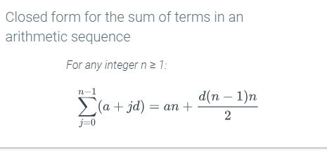

Summation notation
k = index
n = upper limit
s = lower limit
Change of variables in summations
You can substitute the index variable to make summation equations simplified.
For example: if you have the summation
, that
is pretty ugly.
You can make a new index variable
From here, substitute the lower limit into
You now should have
From here, substitute the upper limit into
You now should have
The equality
means that
. When we substitute that into
we get
or
With all this substitution, we now have
Closed forms for sums
You can rewrite a lot (but not all) of summation equations into normal equations.
|
|
For a proof by induction, if is true, then is true. Think dominoes: if the base case (first domino knocking over) is true, then the domino falling must be true.
(Example with division)
(Example with recurrence releation)

(Example with closed summation)

well-ordering principle - any non-empty subset of non-negative integers has a smallest element.
Mathematical induction
Strong induction
well-ordering principle.
Prove one, you prove the other two.